built.html documents five OBJECTS — the menu row, the road tablet, the hero card, the
heading slab, the caption chip. It is still correct about those. This card is which SCREENS they
are assembled into, and where each one is allowed to stand.
Every plate below is the real mockup at 1280×720 with the clock frozen at 17:30. One
hour for all sixteen, so what differs between them is shape rather than lighting — for the ground
each section actually stands on across the day, see foundations/backdrops.html.
All sixteen sit on the frame contract (foundations/frame-contract.html): the
drawing inside x 160–1120 / y 192–576, bare valley 160px either side,
whole-set summaries in the foot band. Read that card before designing a new one — in particular
the part about skew being paint rather than layout, which is what puts a screen in the moat while
its CSS looks right.
| LEVEL 1 | the standing menu — the hero, and five section rows beneath it |
|---|---|
| LEVEL 2 | six: The Path's path · Practice's lanes · The World's lanes · The Exam's ascent · You's ledger · and the daily road, which is reached from inside Practice rather than from a row of its own |
| LEVEL 3 | nine: the deck · the feed · the cleared pile · the drill modes · the daily road · the library · the scene picker · and one JLPT level, open or shut |
Two sections have lanes now, and they are the same component. Practice's three and The World's two are one card doing one job — "which of these do you want to do", nothing ordered, nothing gated against its neighbour. A learner who has read one should not have to read the other.
Every screen below is one of four shapes, and the shape follows the DATA rather than the section. Chain — ordered and gated, exactly one item open. Peers — a small unordered set, all available. List — a large flat set, all available, no order. Dashboard — figures you read, not places you go. Choosing the wrong one is the mistake this menu has made twice, and both are now corrected. One screen carries two shapes — The Exam's level three is a dashboard with a set of peers at its foot — and that is the exception, not the pattern.
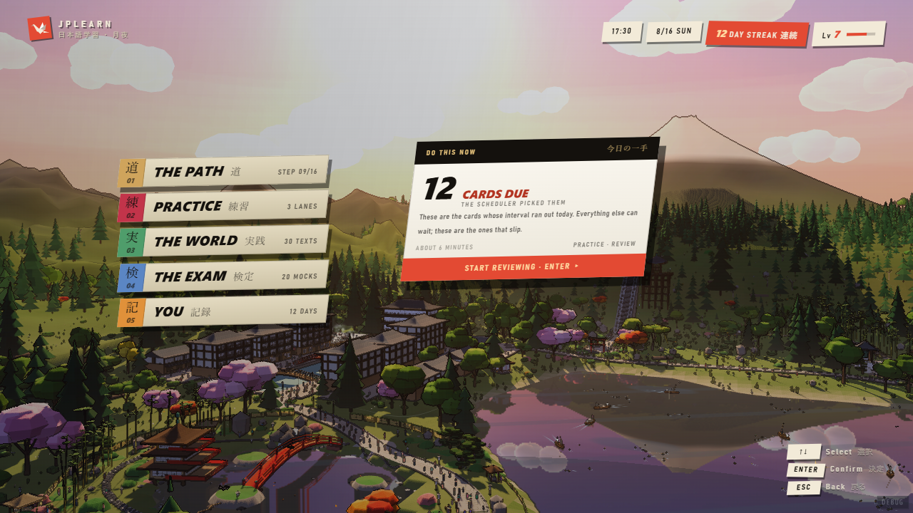
The hero is the selection the menu opens on, which is the whole point: nine sessions in
ten the answer is "do what is due", and a casual player should reach it in one keypress without
having read a section name. Its priority is the app's own — cards due, then the path's next
block, then the unplayed puzzles — because reviews decay if they wait and nothing else on this
menu does. Classes are .st-* and .sh-*.
It replaced the per-section suggestion box rather than joining it. Three layers of "what next" — row slab, box, hero — is two too many, and the box was the weakest and the only one that moved. It also freed the space: the column already fills the stage, so a card above would have been paid for by shrinking the rows.
The one screen that does not obey the contract's balance. It keeps the moat and the bands but stays a left column with the mountain to its right — that composition is why the rest of the interface looks the way it does.
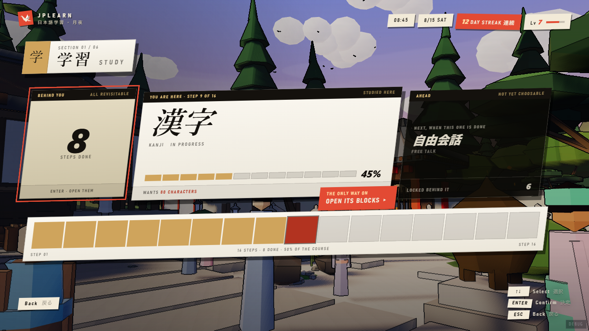
Behind you / here / ahead, and a proportional rail of the whole run beneath. Only the OPEN
item acts; everything else is context. Classes are .dk-*, shared with the deck
screen through chainMarkup.
This replaced a browsable road of sixteen doors. Ten of those sixteen could only throw you at another section — a curriculum node is a milestone, not a door.
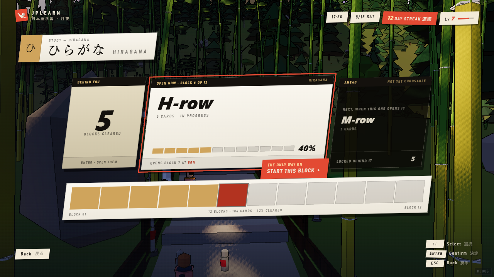
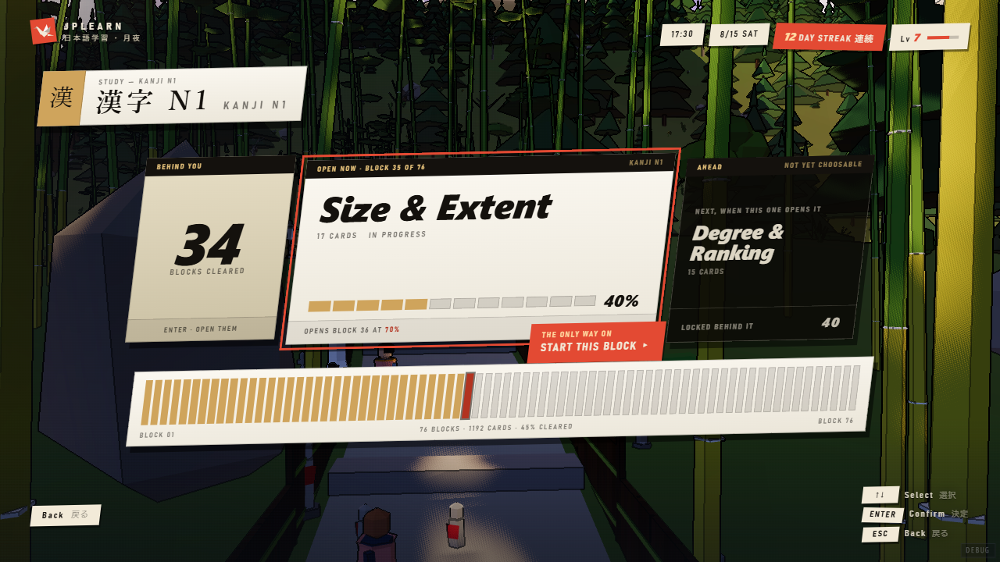
The same drawing and the same classes holding a different chain, shown here at twelve blocks
and at seventy-six. One drawing has to hold both, which is why the rail's segments
divide its width rather than each claiming a fixed size — 76 children at flex: 1
is 12px each, 6 is 155, and neither can overflow.
Three objects, whatever the count: how many are behind you, the one that is open, the one ahead. That is the contract's chain limit doing its job — the alternative was nine tablets and seventy keypresses to reach the end.
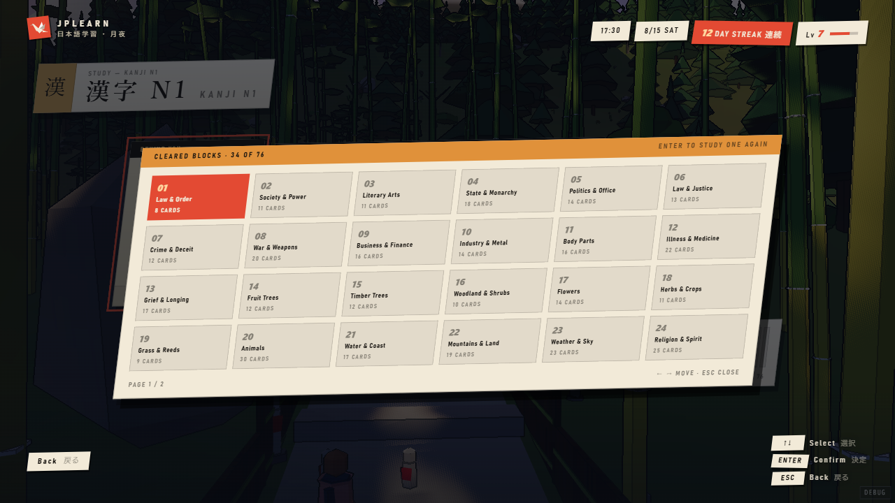
What the "behind you" count opens: every cleared block as a paged grid, 24 to a page, so even 76 blocks is at most two pages and a grid move. A modal over its own scrim — and the stage does not grow for modals either, so it is centred on the stage rather than on the frame.
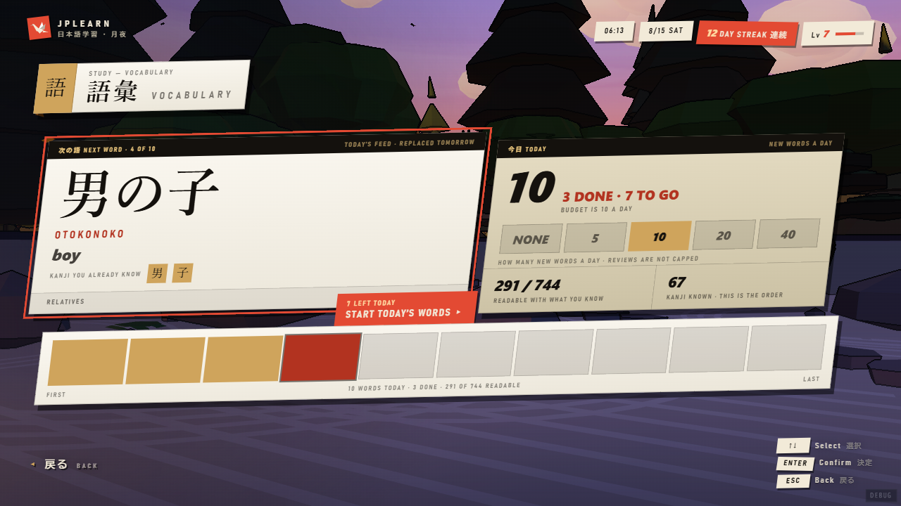
Not a chain: a queue that is REPLACED tomorrow, and emptying it is the point. The budget
control — none / 5 / 10 / 20 / 40 — is the number the whole screen is generated from, so it is
on the screen rather than in a setting. Classes are .fd-*.
Its two denominators are load-bearing: "291 of 744 readable" and "67 kanji known". Without them "here are ten words" is a card trick.
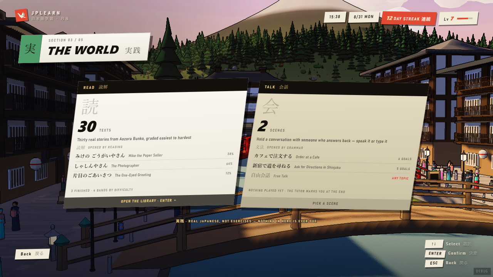
The same card as Practice's, two-up. Reading and conversation — and until this screen
existed the section opened straight onto the library, so a section named for both was one lane
wide while three places in the mockup already promised two. Classes are .pr-*
plus .wd-*.
The extra width is spent on the inside. Two cards across the stage are 445 wide against Practice's 291, and a card that just got 154px bigger without saying anything more is a door with a bigger label on it. Each lane lists the three things you would actually pick, which also makes level three a zoom rather than a surprise.
Nothing here carries vermilion, and that is the difference from the screen it copies. Practice's review lane owes you something; The World is the section you visit because you want to. Same component, opposite colour law, because the DATA is different.
The gate chip on each card names the milestone that opened it, and it is one element with two
states: a quiet credit when the milestone is reached, the lock when it is not. Press
L for the six-step window in which Talk is open and Read is not
(assets/screen-world-shut.png) — a shut lane keeps its figure, its list and its
size and redraws its CONTENT, because locked it was claiming 38% on texts it cannot open.
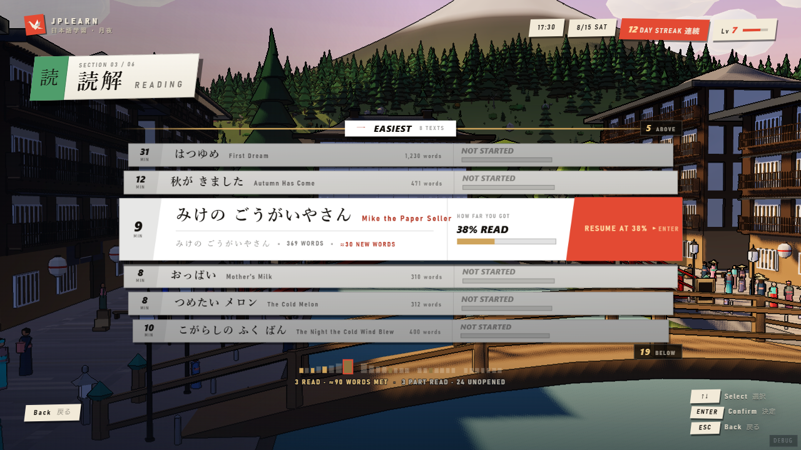
Thirty items, all open, none unlocking another, no correct order. The selected row grows
38→100px and only then admits its detail. Classes are .lb-*. It was this
section's whole level two until the lanes arrived and pushed it one level in; nothing about the
drawing changed.
The clearest example of the contract's overflow rule. Six of thirty are painted, with counts on the two edges saying where the rest went and a thirty-bar strip in the foot. Distance from the selection is drawn as a VEIL over opaque paper rather than as opacity — a faded row fades into the street otherwise, and you can read the road through the page.
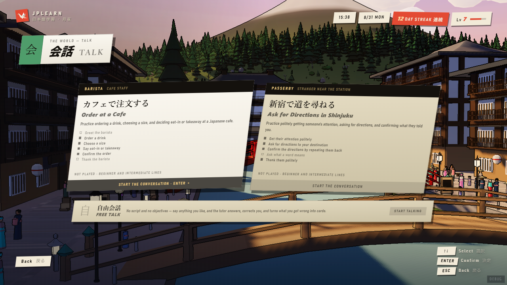
Two cards and a strip, because there are two scenes.
src/lib/scenarios/index.ts exports exactly Order at a Cafe and Ask for Directions
in Shinjuku, so a grid built for twelve would have drawn ten empty slots or, worse, ten
invented ones. Titles, NPCs, descriptions and every objective with its required
flag are the scenario files' own strings. Classes are .sc-*.
Free talk is the strip, not a third card. It has no objectives, no NPC and no end, so a
card with three empty rows would have made it look like a scene that failed to load. Required
objectives are solid, optional ones hollow — the difference required: false makes
when the tutor marks you at the end.
When the app grows more scenes this becomes a road. Until it does, two scenes get to be two scenes, and each is wide enough to show what it will actually ask of you.
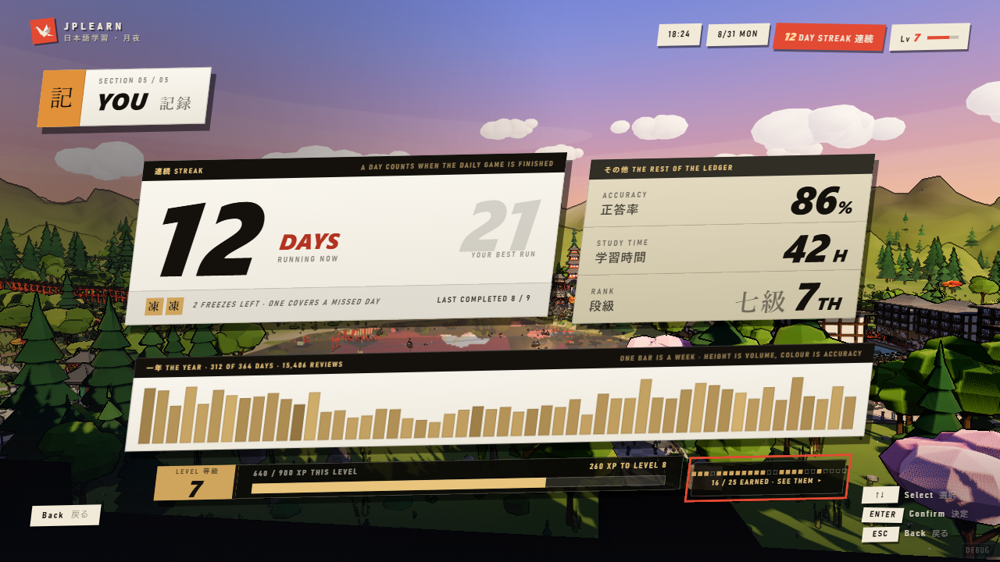
Figures you read, not places you go — there is nothing inside a streak to open. The current
run large with your best behind it in the same type at 15% ink; a year of daily activity as 52
weekly bars, height for volume and colour for accuracy. Classes are .lg-*.
It must survive a bad week: press W in the mockup for a streak of one and a year mostly empty. A records screen that only looks good on a good account has not been tested.
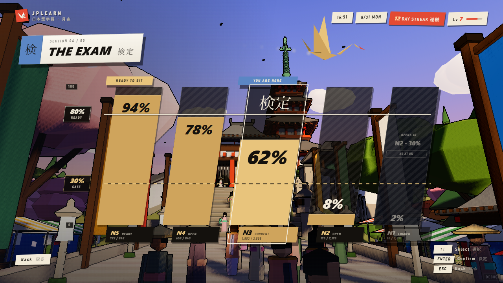
Five columns whose HEIGHT is readiness, a 0–100 measure at the left, and both thresholds
drawn straight across all five as deliberately different marks — 30% dashed (opens the next
level), 80% solid (ready to sit). Classes are .as-*.
This screen used to have an open problem and no longer does. Its right-hand detail panel was a level three living inside a level two — the only screen here doing both jobs at once — and the contract charged it for that: measure, columns and panel came to 1230px of demand that had to become 960, so the panel was squeezed 340→288 and the plinths dropped their mastered counts. The panel is a screen now, and this is the ladder, the measure and the two thresholds. One cursor instead of two.
The freed width went into the GAPS, not only into the bars, and that was measured rather than assumed. Laid first at 150 wide with 9 between, five 352-tall columns run unbroken from 270 to 1094 and the valley stops existing between the moats — the one thing the contract says the drawing must not spend. At 118 with 50 between, and a lighter track, it is still a chart and there is still a village behind it. The plinths took their three facts back on two lines rather than one.
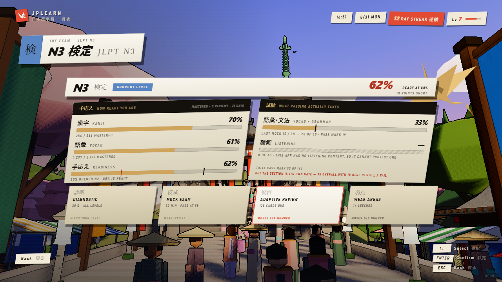
Two shapes on one screen, deliberately. The reading is a dashboard — figures you look
at, with nothing inside a percentage to open. The four modes are peers — a small unordered set,
all available. They are drawn as different objects because they are different things, and this
is the only screen in the set that carries both. Classes are .lv-*, and the split
bars are the ascent's own .as-split moved whole rather than redrawn.
It answers three questions in the order someone deciding whether to book an exam asks them. How ready am I, and out of what — kanji and vocabulary against the 80% line. What would happen if I sat it. What do I do about it — the four modes, each saying what it is FOR, because two of them move the readiness figure, one measures it, one finds which level to aim at, and the card counts never said which was which. Adaptive Review carries the vermilion whether or not it is selected: which of the four you owe is a fact about the queue, not about where the cursor is.
The middle question is the new part, and the app can only half answer it.
project_mock_score scales a mock into the vocabulary-and-grammar section and
stops — listening_projected is always None and overall_passes always
False, because there is no listening content. So the screen draws the section it can project,
hatches the one it cannot, and says the total is therefore not something it can predict. An
absence is drawn as a hatch and an em dash, never as a zero: "you scored nothing" is a
different and untrue claim.
Beneath that is the sentence this screen exists for, and nothing anywhere else in the app says it: the vocab-and-grammar section is a separate gate, so a total above the pass mark with that section below its own mark is still a fail.
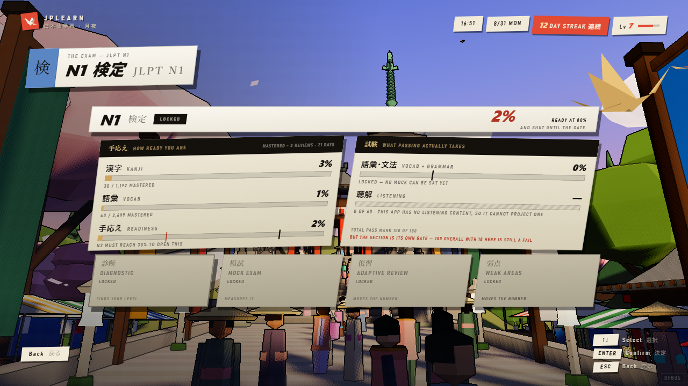
A locked level still opens and still reads. This is the one place in the menu where Enter on something shut is not refused, and deliberately: what a locked level needs to tell you is what is gating it and how far off that is, which is a screenful, not a flash. The refusal moved inward to the four modes, where it belongs — you can read N1, you cannot sit it.
Everything keeps its size and loses only its brightness, which is the same law the locked lane in The World obeys. The gate is named in the readiness row's own caption (“N2 must reach 30% to open this”), and the pass marks are still stated — they are true of the exam whether or not you can sit it yet.
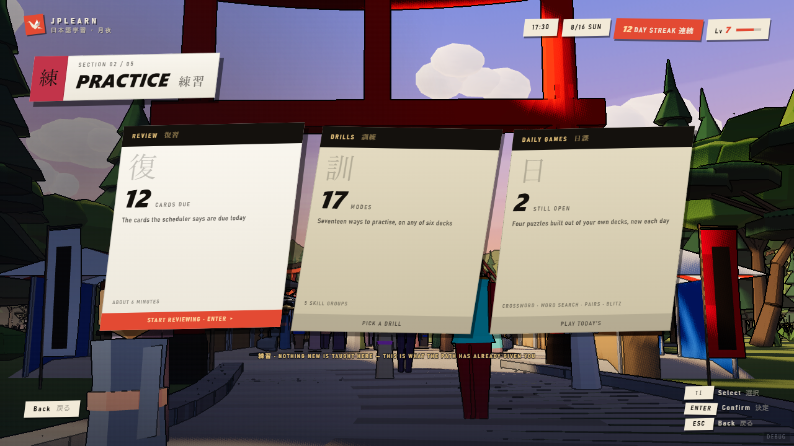
Practice is the one section that is a merge rather than a rename: it absorbed the daily
puzzles, the seventeen drills, and the review queue that never had a home anywhere. Three
things you can do with material the path has already taught you, and nothing new is introduced
here. Classes are .pr-*.
Only reviews carry vermilion, because only reviews are an obligation — the other two are things you choose. That is the same colour law the action slab obeys everywhere else.
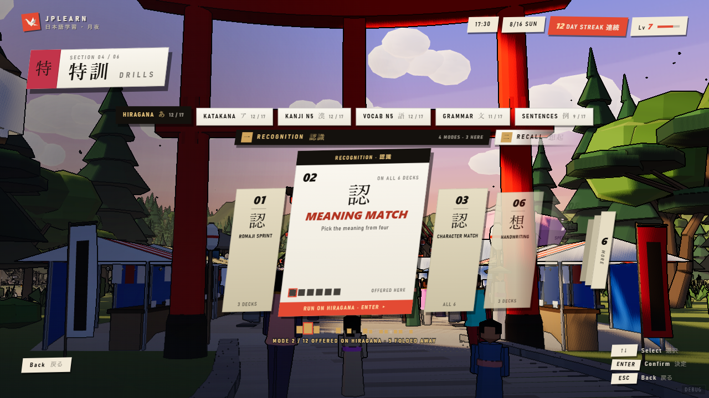
The road, kept, plus the axis it was missing. Seventeen modes in five groups with a deck row
above them — a mode the current deck does not offer leaves the road entirely and
the road closes over it. Classes are .dr-*.
Three counts are what stop a fold reading as deletion: each group block says “n MODES · m HERE”, each deck chip “n / 17”, and the foot strip keeps a mark for all seventeen. Grammar folds six away and says so.
Four of the seventeen exist on exactly one deck — Stroke Order is kanji only, Vibe Check is grammar only, Compound Builder and Conjugation Drill are vocabulary only. That is what this screen is made of, and the reason a flat list of seventeen would be a lie.
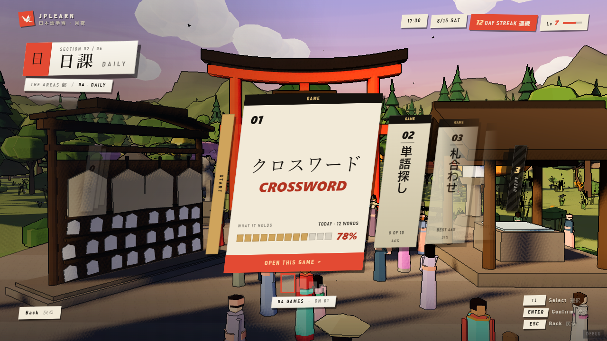
The carousel from built.html B&C, inset to the stage. It was full-bleed on
purpose — a road that stops at the frame edge is not a road — and it survives the move because
of its mask: the road does not stop at x160, it fades there, into open valley rather
than into the glass.
It carries one section now. DAILY is four games you pick between — a small unordered set, nothing locked, nothing sequenced — which is exactly what this shape is for. DRILLS used it until August 2026 and has its own screen above; READING’s level three no longer uses it either.